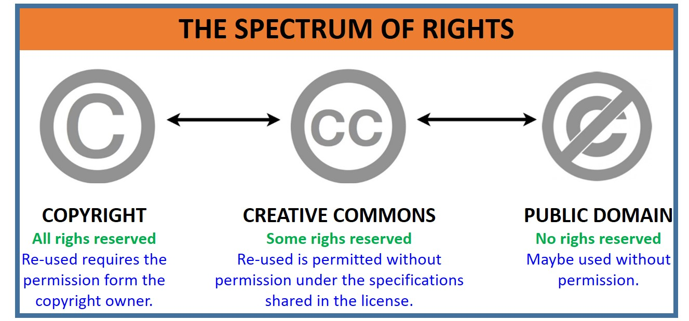

Copyright, Creative Common (CC) Licenses, Fair Use
Basic principles of copyright: copyright is the exclusive right for a creator of an original intellectual property to adapt, publish, copy and perform their work. Copyright is automatically applied to published works including (but not limited to):
- Music
- Art
- Printed materials
- Computer software/programs
- Dramatic performances
New Zealand copyright laws state that copyrighted works are protected for the creators lifetime and for as long as 50 years after their death.
Here are 4 examples of different Creative Commons licesnses:
CC BY - allows anyone to distribute, build upon, adapt or remix the licensed material as long as credit is given to the creator.
CC BY-ND - allows anybody to copy or distribute the licesned material as long as credit is given to the creator, however the material cannot be adapted/derived in any way.
CC BY-NC-ND - allows anybody to distribute or copy the licensed material as long as credit is given to the creator, the material has not been derived/adapted and is not used commercially.
CC BY-SA - allows anybody to distribute, build upon, adapt or remix the licensed material as long as credit is given to the creator. If the material is adapted, it must be licensed under the same terms as the original work.
Fair use: the copying of a copyright-protected work for the purposes of parody, commentary or criticism. Permission from the copyright owner is not required for these uses.
References:
Creative Commons. (n.d.). About CC Licenses https://creativecommons.org/about/cclicenses/
Stanford Libraries. (n.d.). What is fair use? https://fairuse.stanford.edu/overview/fair-use/what-is-fair-use/
Copyright Licensing NZ (n.d.). What is copyright? https://www.copyright.co.nz/understanding-copyright/what-is-copyright
Privacy & Web Privacy Policy

A privacy policy is a document explaining how an organisation will store, use, collect and protect any personal information given to them by their users. This also includes a description of how they will meet their legal obligations to privacy and if they fail to do so, how users can seek help or compensation.
Reference:
Website Policies. (2022). What is a Privacy Policy: The Definitive Guide. https://www.websitepolicies.com/blog/what-is-privacy-policy#what-is-a-privacy-policy
Search Engine Optimization (SEO)

Here are five ways to improve your website's SEO:
Searchable, quality content: ensuring that your website's content contains good keywords/phrases that can be picked up by a search engine can increase the likelihood of your website being found by users.
Optimise loading times: making sure your website's pages load quickly is important as most search engines will recognise if they load too slowly and will decrease the likelihood of users finding your site. Increasing your page's load times will also help with visitor retention as explained in the "Web Publishing" section of this page.
Relevant content: keeping the content on your website up-to-date will increase the likelihood of users visiting your site as search engines can sheck how often pages are updated and factor this into search results. This includes keeping your content's links updated to ensure they are still working.
Good use of metadata: writing good meta tags, including a page description, title and alternative text for media elements will help communicate to the search engine what your webpage is about and sort it accordingly.
Responsive layout: ensuring that your website includes a responsive layout for mobile devices will improve a mobile visitor's experience and increase the average time spent on your site. Most search engines record how long visitors spend on your site and this will be factored into how likely it will be for users to find it in the search results.
References:
Carter, E. (n.d.). 9 Ways to Improve Search Engine Optimization. https://www.webfx.com/blog/seo/how-to-improve-search-engine-optimization/
Australian Government. (2022). Improve your search engine rankings. https://business.gov.au/online/business-website/improve-your-search-engine-rankings
Web Publishing

When choosing a web hosting provider for your website there are three major factors that should be considered:
Average uptime: the amount of time the website stays up on average at any given moment. If you web host has a low average uptime, there is an increased likelihood that your webpage will be down and inaccessible for visitors trying to view it. A lower uptime means less total traffic.
Load time: the amount of time it will take for your webpage to load. A visitor on your website will become frustrated quickly if every page takes a long time to load and will either spend less time on your site or just leave.
Security: your chosen web host should have extensive security features including: secure data centres, DDoS protection, SSL and encryption. It is the owner of the website's resposibility that their visitor's personal information is secure.
Reference:
Host Papa. (2022). 11 Key Considerations When Choosing Your Web Hostinghttps://www.hostpapa.co.nz/blog/web-hosting/11-key-considerations-when-choosing-your-web-hosting/
Web Performance and Maintenance

Here are five ways to improve your webpage's load times:
Choosing a good web host provider: your web host has a significant impact on your website's load times. Opting for a web host which puts a strong emphasis on performance may be more expensive, but it will significantly improve the visitor's experience.
Optimising your media: large images and videos on your webpages will dramatically increase its load times. To counteract this, you can compress any large images and videos or changing the file's format to reduce their file size. Choosing the right situations to add images to your pages can also help, as having too much media on one page can also detract from its readability.
Efficient use of HTML, CSS and Javascript: Removing unnecessary code from your webpages can improve its load times as this results in a lower file size. This also improves your code's readability for yourself or other developers working on your site in the future.
Limiting redirects: reducing the number of redirects on your website will reduce the length of the HTTP request and thus reduce the total loading time.
Caching your webpages: this will result in your web host's server using less resources to load each page as the file is already stored as a copy that can be retrieved quickly.
Here are five tasks that can be carried out to maintain your website:
Creating backups: Ensuring that you have an up-to-date backup of your website stored in a different location to the site itself ensures that nothing will be lost in the event of a cyber-attack, power outage or any other event that could cause a loss of data.
Updating your site's content: keeping your content relevant is vital for attracting visitors to your website. This helps greatly in regards to search engine optimisation and is discussed in the SEO section of this page.
Testing your website's performance: ensuring your site's load times are acceptable is an important process as a slow loading time may indicate that something needs to be improved or fixed on your webpage.
Updating links and fixing errors: making sure any links on your webpages are working and that there are no errors will improve the visitor experience and improve your SEO.
Checking browser compatibility: checking that your website is still presentable on many different web browsers will ensure that your site will be accessible to as many users as possible. Developing your site with a responsive layout can help with this.
References:
Duò, M. (n.d.). 9 Quick Ways to Improve Page Loading Speed. https://blog.hubspot.com/marketing/how-to-reduce-your-websites-page-speed
Prasad, A. (n.d.). 8 Regular Website Maintenance Tasks for Peak Performance. https://www.gmrwebteam.com/blog/8-regular-website-maintenance-tasks-for-peak-performance
Web Security

Five different types of cyber attacks:
Distributed denial of service (DDoS): when several computers send a significant amount of requests or information to a server which causes it to decrease its performance or crash.
Phishing scam: where the attacker pretends to be a trusted individual/entity through communication with the victim with the goal of stealing or gaining access to sensitive information.
SQL injection: where the attacker uses an SQL query in order to gain access and modify, view, or delete sensitive information. This attack is used against websites that are database-driven and can therefore be manipulated using an SQL query submitted through an input field.
Ransomware: where an attacker blocks access to the victim's sensitive information with the promise of restoring the affected files if a demand is met. Generally the attacker blocks access to the files by encrypting them and additional threats are made to encourage the victim to meet the demands specified.
Password attack: where the attacker attempts to obtain the victim's password to access sensitive information. this can be performed using methods such as a keylogger, phishing scam, attempting commonly used passwords or using a program to try any possible combination of characters in a brute-force attack.
Preventative measures that can be taken against these attacks:
In the case of DDoS attacks, you can employ a firewall or network security solution in most cases, however a cloud-based DDoS protection service ensures the lowest chance of a successful attack.
Password attacks can be prevented by ensuring that your passwords are complex - involving a mixture of letters, numbers and symbols while setting a minimum password length to increase complexity. If you are protecting a company or organisation, providing education around password management to prevent passwords being written down, etc. can minimise the risk of an attack.
Testing/checking your IT infrastructure for weaknesses can reduce the likelihood of an attack. These weaknesses can be either technology-based such as an unreliable/ineffective firewall, or human-based such as poor education around IT security.
A bot protection system can reduce the likelihood of a successful attack. Bots can be used to carry out DDoS attacks, spread malware and steal sensitive information. A protection system will monitor internet traffic for malicious bots and prevent them from accessing your website.
Reference:
Cobb, M. (n.d.). 13 common types of cyber attacks and how to prevent them. https://www.techtarget.com/searchsecurity/tip/6-common-types-of-cyber-attacks-and-how-to-prevent-them